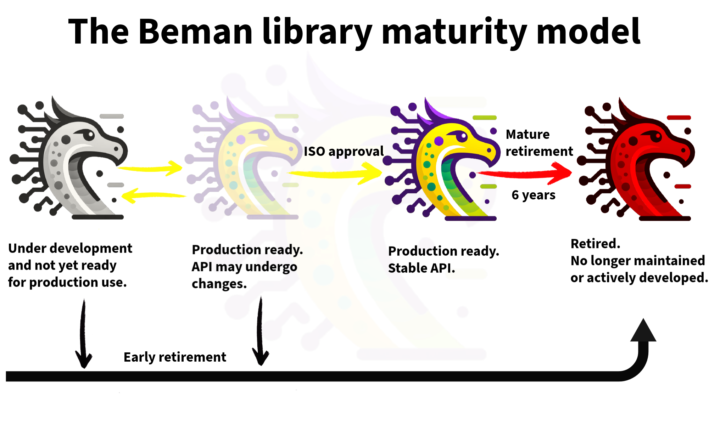

Beman Library Maturity Model
The Beman Library Maturity Model
The Beman maturity model helps developers quickly assess the production readiness of Beman libraries by classifying them based on development phase and interface stability.

Under development and not yet ready for production use.
These libraries may deviate from the Beman Standard due to incompleteness, lack of testing, inconsistencies with the specification, or other non-conformances.
They are not recommended for production usage!
Production ready. API may undergo changes.
These Beman-compliant libraries are production-ready, fully implementing the target paper with complete testing and documentation. Users should be aware that future API changes are possible and that standardization is not guaranteed. See below for details on the requirements to transition to production-ready.
These libraries are recommended for production usage.
Production ready. Stable API.
These production-ready libraries offer stable, standardized APIs. They are part of the C++ Standard and can be used as a polyfill for compilers lacking native support. Note that these libraries will be retired after two standardization cycles (6 years).
These libraries are recommended for production usage.
Retired. No longer maintained or actively developed.
These libraries were archived and no longer maintained. These libraries are not recommended for production use.
These libraries are not recommended for production use! These libraries were removed from the Beman main distribution, but the initial authors could still support them outside the Beman Project.
Transition examples:
-
They were Production ready. Stable API. at some point, but are no longer developed or maintained, being superseded by native compiler implementations -
Mature retirement. -
They were Production ready. API may undergo changes. at some point, but are no longer developed or maintained, being rejected from the ISO C++ Standardization -
Early retirement. -
They were Under development and not yet ready for production use. at some point and were abandoned -
Early retirement.
Review Process for Transitioning a Library to “Production Ready”
For a Beman Project library from Under Development to Production Ready status a formal review needs to be completed. The intent is to ensure that every production-ready library meets the Beman standard for quality, completeness, and documentation, and that it has received sufficient community review and testing.
Review Process Details
-
Review Logistics Typically this is requested by the library author, but any community member that feels a library is ready can suggest a review. The review will be managed by one or more leads or an lead appointee/volunteer.
A post is made on Discourse announcing the start of a two-week library review period. The announcement should include: * The released version of the library to review. * Link to a PR to review for review comments. ** Note: The PR may not have much diff content but is the place for gathering feedback. * Any other guidance for the reviewers.
-
Review Criteria To be eligible for Production Ready status, a library must demonstrate that it:
-
Meets the Beman Standard with deviations documented (passes beman.tidy checks).
-
Has comprehensive unit test coverage validating functionality and edge cases.
-
Includes complete and accurate documentation, including tutorial, design rationale, and examples.
Note that much of the design documentation may simply reference the WG21 paper. Also note that since the current documentation system is a work in progress, docs should be Markdown for now.
-
-
Community Evaluation During the review period, the community is encouraged to:
-
Build and test the library on supported platforms.
-
Review its design and documentation.
-
Provide feedback and raise issues for discussion.
-
-
Approval Requirements A library may transition to Production Ready status only after:
-
Demonstrated positive community consensus that the review criteria have been met as determined by at least two project leads, or
-
in the rare case there is lack of consensus, the leads make a call.
-